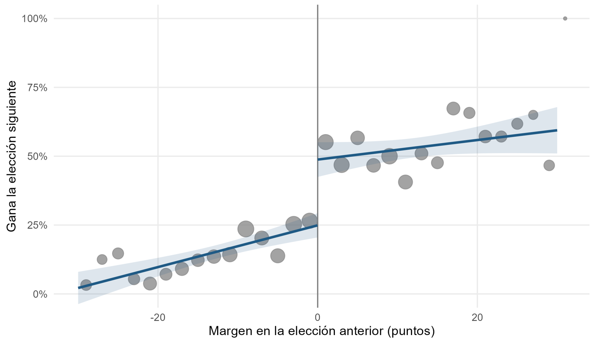
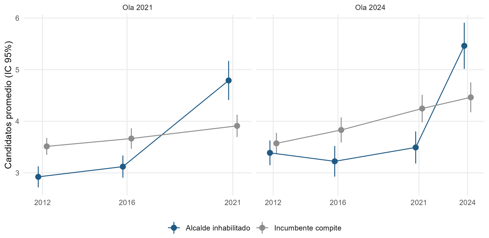
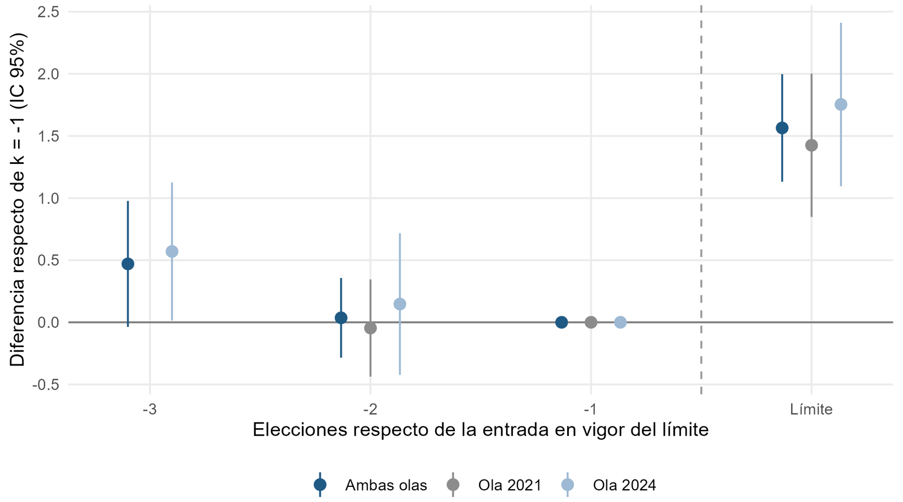
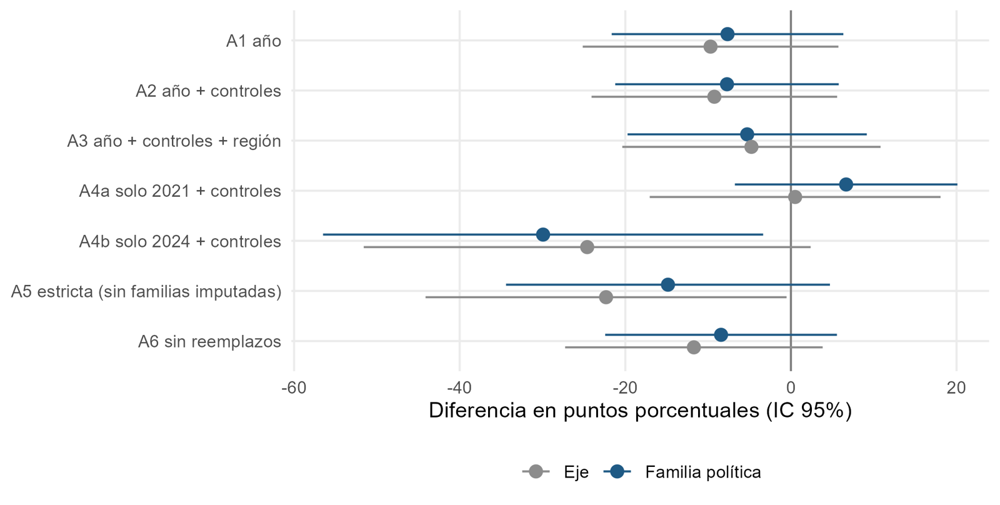

Fin del atrincheramiento: el límite de reelección y la competencia municipal en Chile, 2012–2024
En 2020, la Ley N.° 21.238 limitó a tres períodos consecutivos la permanencia de los alcaldes y contabilizó los períodos ya ejercidos. Por eso rigió de inmediato: 96 alcaldes no pudieron repostular en 2021 y otros 69 en 2024. Algunos gobernaban su comuna desde 1992.
Este documento de trabajo pregunta qué cambia en una elección municipal cuando el alcalde deja el cargo por el límite legal y no por decisión propia. La distinción importa porque las salidas voluntarias no son aleatorias, mientras que el límite opera por una regla que el alcalde no controla. Esta entrada resume los hallazgos; el documento completo desarrolla el marco teórico, el método y las limitaciones.
Datos y métodos
El análisis usa los resultados oficiales del Servicio Electoral (SERVEL) de las elecciones de alcalde de 2012, 2016, 2021 y 2024 en las 345 comunas, junto con los 24 reemplazos de alcaldes ocurridos durante esos períodos, documentados caso a caso. Los períodos ejercidos se cuentan según el criterio del SERVEL, que considera cumplido un período cuando se ejerció más de la mitad del mandato, como electo o como reemplazante. La ventaja del incumbente se estima con una regresión discontinua en elecciones estrechas, y el efecto del límite con diferencias en diferencias apiladas por ola de aplicación (2021 y 2024). Todo el procesamiento es reproducible en R.
Cinco hallazgos
1. La ventaja del incumbente es grande
Ganar la alcaldía por un margen estrecho aumenta en 33 puntos porcentuales la probabilidad de ganar la elección siguiente. Cerca del umbral, quien pierde por poco gana la siguiente elección en uno de cada cuatro casos, y quien gana por poco, en uno de cada dos. El resultado se mantiene con distintos anchos de banda y no aparece en umbrales placebo. Esa ventaja es la que el límite retira de la competencia.

2. El límite abrió la competencia
Las comunas con alcalde inhabilitado sumaron alrededor de 1,5 candidatos a alcalde respecto de la elección anterior, cerca de 45% más. El efecto es casi idéntico en 2021, con voto voluntario (1,43), y en 2024, con voto obligatorio (1,75), lo que reduce la posibilidad de que responda a una coyuntura particular.

3. El alcalde atrincherado disuadía a sus rivales
Mientras su alcalde competía, las comunas que luego quedarían bajo el límite tenían menos candidatos que otras comunas con incumbente en competencia. Es lo que predice la teoría del efecto disuasivo: los aspirantes evitan desafiar a un incumbente fuerte y esperan un escaño abierto. Al quedar fuera por ley, esa competencia contenida emergió de una vez. Dos elecciones antes del límite, ambos grupos evolucionaban de forma paralela.

4. La salida forzada atrae más candidatos que la voluntaria
Toda elección sin incumbente atrae más candidatos, pero no en la misma medida. El escaño abierto por el límite suma 0,58 candidatos más que el que el alcalde deja por decisión propia. Una explicación posible es que quien se retira por voluntad propia elige el momento y puede ordenar su sucesión.
5. El límite no castiga al sector saliente
Sin incumbente, la familia política del alcalde saliente retiene la alcaldía en alrededor de una de cada cinco comunas, sea la salida por ley o voluntaria, frente a tres de cada cinco cuando el incumbente compite. La diferencia entre ambos tipos de salida no es estadísticamente significativa. El límite aumenta la alternancia porque multiplica los escaños abiertos, no porque perjudique al sector del alcalde que se va: en la política municipal chilena, la continuidad descansa más en la persona que en su partido.

Alcance
Los inhabilitados de 2021 se identificaron a partir de una nómina pública, porque el SERVEL no publica los resultados de 2008 en formato de datos, y los reemplazos de alcaldes se reconstruyeron desde la prensa. El estudio mide cuántos candidatos compiten, no su calidad ni el desempeño posterior de las gestiones municipales. De cara a 2028, 46 alcaldes no podrán repostular: una tercera ola, más pequeña que las anteriores.
Cómo citar
Bottinelli Baltra, L. (2026). Fin del atrincheramiento: el límite de reelección y la competencia municipal en Chile, 2012–2024 (Documento de trabajo N.° 2). https://doi.org/10.5281/zenodo.23877074
El código en R y los datos procesados de esta versión están archivados en Zenodo: https://doi.org/10.5281/zenodo.23877018.
← Volver al blog